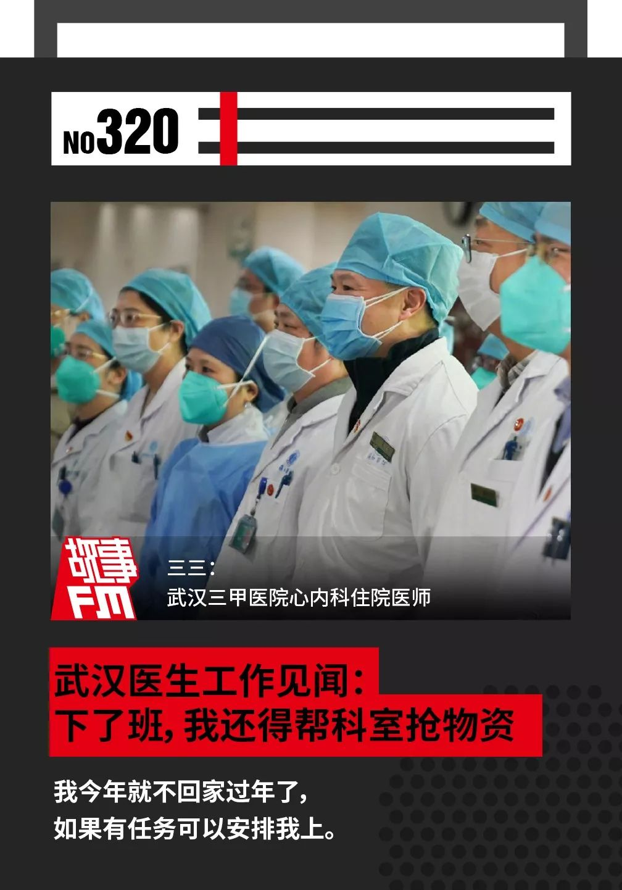
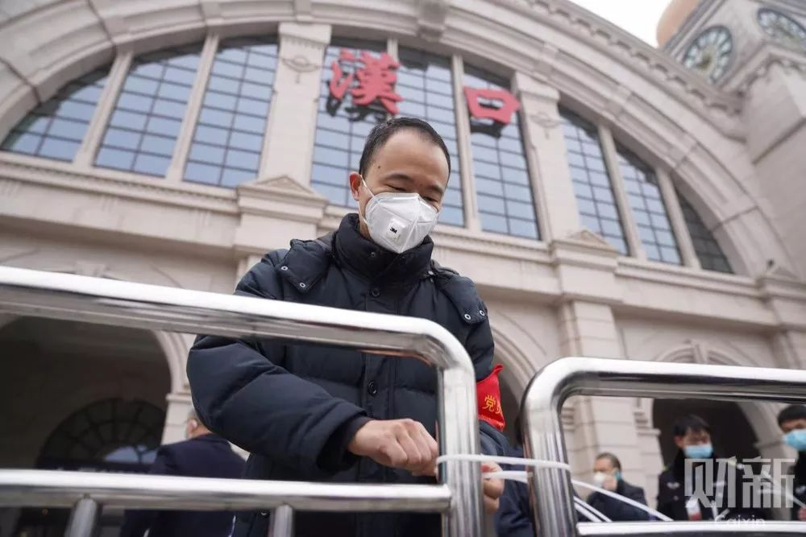
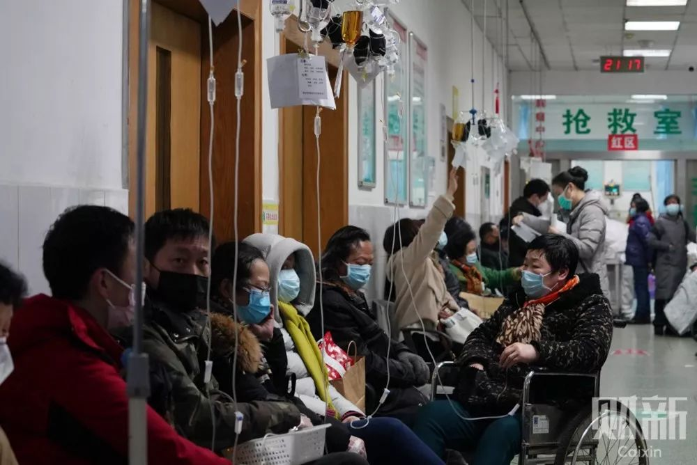
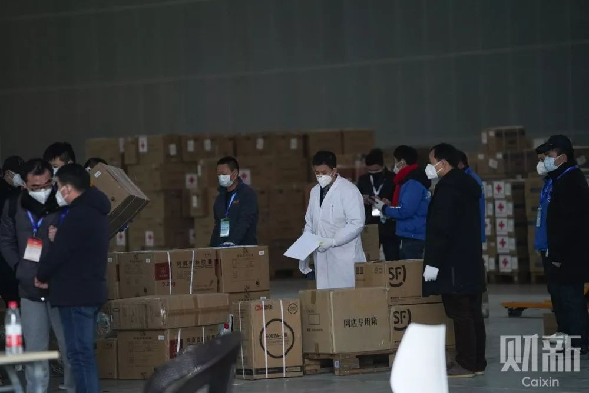

特别报道 | 武汉医生亲述：前线究竟需要什么
原文链接 备份链接 祁立说现在最大的困难，是发热门诊的就诊人数过多。而一线医务工作者最需要的，是能让患者根据规范的指南分级诊疗，减轻发热门诊和隔离病房不必要的压力。整个采访，他没有表达恐慌和焦虑，只希望传递客观、真实、有价值的信息。 记 …

🎧 点击上方图片，跳转「故事FM」小程序，收听真人讲述。记得添加「我的小程序」，一键收听全部故事哟！
大年初一的时候，故事FM 采访了五位普通的武汉市民，请他们讲了讲这个时候身处疫区的真实感受。
今天我们要播出的是一位医生的自述，他现在是武汉一家三甲医院心内科的住院医师。
-1-
决定留守
我叫三三，现在是武汉一家三甲医院的心内科住院医师。
新型冠状病毒这个事情我们大概在一月初的时候就知道了。因为武汉这边三甲医院的医生，很多不是武汉大学就是华中科技大学毕业的，圈子很小，所以消息流转非常快。
当时是武汉市中心医院的一个医生在同学群里面，就是在协和 15 级的什么群里面发出来这个资料，我们学医的一看那个 CT，就知道是病毒肺。
武汉市中心医院当时让病人自费做了病毒基因检测，检测的结果是它跟冠状病毒相似度 70%，所以那个医生才敢说是「新的非典」。
我们主任比较好，一月初他发现这个事情就在科室里跟我们讲了。
然后，我们医院在一月的前两个星期就已经调整发热门诊的人数，做好准备了。但是官方这个时候说「没有人传人」，可能是怕引起恐慌吧。

■1 月 23 日上午，汉口火车站工作人员在进站口封锁铁栅栏。 图/财新网 拍摄/丁刚
我当时还想着，大年二十九值完夜班之后就回家过年，初十之后再回来上班，但后面情况就越来越严重了。
一月十几日我们这就出现了感染的情况，我们就开始自己买 N95 口罩、紫外线消毒灯、药品，这些都是自备。
我那时候还觉得无所谓。真正慌的时候是 1 月 23 日武汉封城，没有想到这个病毒传播性这么强。
我老家在武汉下面一个县城里。我就让老婆先回去了，我一直纠结自己回不回去。
22 日抢口罩的时候，我本来说我要回去，我们主任说了一句，「你这不负责任，你在医院里面待过，你再回去就不怕传播给别人？」
这句话到后面我想了好几天，大年二十八我就跟科室说，我今年就不回家过年了，如果有任务可以安排我上。
其实最终让我下定决心的，是我们同一批进来的一个同事。他当时去了发热门诊，然后告诉我，封城之前他在门诊看了 188 个病人，其中 88 个 CT 显示是阳性，所以封城前这个病情就比较严重了。
所以我才决定不能回去，因为我多多少少也算暴露过几次，自己即使没有问题，不代表没有携带。
还好封城之后，通过政府的宣传，现在大家都知道怎么回事了。
现在 CT 阳性的话，我们只能叫疑似病例。因为确诊要用基因盒，这个我们非常紧缺。但是我们有一个标准，就是看 CT 是不是病毒肺。只要他 CT 上显示是病毒肺，这个人就应该八九不离十能确定感染了。
这个病毒传染性非常强，我们科室目前有三、四个人在隔离病房，前两天基因检测后已经确诊了。因为我们有一个心内科去呼吸内科的会诊，不知道当时有没有接触到病人，可能去过那个病房就被感染了。
后来我们就在科室里讨论了一下感染的主要症状。它不是看你有没有发热，或者流鼻涕、打喷嚏这些感冒的症状。它最先出现的症状是，我们看病人有没有乏力和有没有胃口。如果出现乏力、没有胃口，我们就建议去做个 CT，确诊一下。

■ 讲述者提供的病毒肺的 CT 图
-2-
科室与医院的现状
因为我们是心内科，现在属于二线科室了。封城前一个星期，我们医院就开始组织发热门诊、隔离病房。原来一个病房是三张床，可以放三个病人。隔离病房为了防止交叉感染，只能放一个病人。所以原来呼吸科的病人就转到我们这些二线科室去了。
我们目前安排的班是一个人上 24 小时，然后休息 6 天。因为现在又开了几个呼吸内科，就抽调了好多医生去发热门诊和隔离病房。护士也抽掉了不少，去其他科室或者去支持金银潭这样的医院。
非典的时候，因为大剂量使用激素治疗，很多病人治愈后留下了严重的后遗症。但这次到目前还没有看到有大剂量使用激素。
如果高烧不退的话，会使用小剂量的，这个是正常范围之内的。我们临床都会用的。
但是如果你的肺炎感染得很重，将来多多少少都会留下一点东西。就怕出现肺纤维化之类的情况。年轻的时候可能没什么，年老的时候就比较容易发生感染。
目前武汉所有的医院，基本上都处于没有床位的状态，病人收不进去，除非你特别危重。像轻微和中度的病人，都是让他们回家自我隔离、吃药，这是没办法的事情。
我现在看到一般门诊基本上没有什么病人了，以前大厅都是排满人的，现在就零零散散几个人。但是发热门诊人很多，排很长的队。而且晚上还比白天人多，可能他们怕小区的邻居知道自己来看病。

■1 月 22 日，红十字会医院，前来就诊的发热患者挤满楼道。 图/财新网 拍摄/蔡颖莉
-3-
紧缺的防护物资
作为二线的医生，我现在每天的工作有点尴尬。除了该上班的时候上班，每天就是自我隔离，然后在群里填各种爱心组织捐赠的申请表单，帮科室抢一下物资。
因为我们医院很多东西都没有了，像口罩、防护服、护目镜，这些东西都是没有的。
其实，对于隔离病房来说，物资的使用有严格的要求。比如普通的外科口罩，真正有效期大概就是 3~4 个小时，N95 的话可能就 4~6 个小时。
但因为我们缺物资，所以一戴就是一天。现在还出现了一种现象，像我们在二线科室的，N95 口罩用完一天之后，我们拿去水龙头下接水，看它漏不漏水，没漏水的话应该还能用，就拿酒精消消毒、放在紫外线灯上消下毒，然后继续用。
特别是隔离服、护目镜和 N95 这种物资，不属于医院的平常需要，所以它们的储备量都不会特别大。但是我们员工就有 1000 多人，加上每天的消耗，慢慢就没有了。
前几天，协和医院是第一家直接向外界求援的，他们做了之后，我们这些医院才跟着也向社会求援。昨天在微博上看到协和西院的护士没有口罩，自己用手术衣的材料自己剪。他们已经到了这种地步，比我们更惨。
因为武汉红十字会这个物资还没有分配下来，反正我没有领到过红十字会的东西。所以我们基本上都在抢物资，争取爱心人士捐助的口罩这些东西，然后我们为科室和医院出点力。

■2 月 1 日，武汉国际博览中心的红会临时仓库，工作人员在仓库内清点、登记。多家医疗单位等候领取物资，直到下午才领到少量离开。 图/财新网 拍摄/丁刚
-4-
准备被召唤
我现在在等着随时被召唤上一线。前两天就已经练习了怎么做二级防护，包括穿衣服怎么穿，我们都有一个流程标准的。我们主任要我背了几遍。
去发热门诊我自己最担心的主要是医闹行为。之前不是有一个被确诊的嘛，那个家属把医生给打了，结果医生严重暴露了。还有扯医生的口罩、吐痰这种事情。
其实最麻烦的还是心理压力，但我觉得我的抗压能力还好。
我印象最深刻是大年初一，我们科室有一个女生出现了发热的情况，她心态就崩了。后来还好，她只是普通的感冒，就回家自我隔离去了。
我能理解大家心里的恐慌，这个病毒的确要重视，但是不需要恐慌。因为它虽然传染性高，但是它的死亡率不是很高，基本上死亡病人多多少少都合并了一些基础病，身体比较衰弱的，所以扛不住。
我在发热门诊的那个同事自己统计了一下，发现三十岁左右的发病率不到 5%。我们医院的隔离病房好像还没有出现死亡的，有几个用了药之后还出院了。
死亡率不高，我们也不就不那么担心了。
所以说还是一个抵抗力的问题。你不如趁着这一段在家的时间，吃好喝好休息好，调整好自己的心态，别信那些偏方。
如果说双黄连能抑制病毒的话，那我想说，白开水也有抑制作用呢。大家如果都有点医学常识的话，就不会相信这些东西。
——————
因为新冠病毒疫情的影响，故事 FM 已经推迟到了 2 月 10 日上班。所以这段时间我们团队只能在家里远程协作办公，工作效率肯定会有所影响，每周一、三、五的节目更新频率也难以保证。不过我们会保证一周更新三期节目，至于什么时候会播出，推荐你随时关注 故事FM 的微信公众号动态。
感谢你的收听，祝你和家人平安健康！
-封面图来源 @新华视点
未注明来源图片由 讲述者 提供

Staff
讲述者 | 三三
主播 | @寇爱哲
制作人 | @寇爱哲
声音设计 | @故事FM 彭寒
文字 | @寇爱哲
运营 | 翌辰
BGM List
01. StoryFM Main Theme - 彭寒（片头曲）
02. 华芳 - 彭寒（回家）
03. The Awaited Little - 彭寒（激素）
04. 三叶，喷的变奏 - 彭寒（片尾曲）
故事FM
用你的声音，讲述你的故事
苹果播客 | 网易云音乐 | 蜻蜓 FM | 喜马拉雅
QQ 音乐 | 荔枝FM | 懒人听书 | 酷狗音乐
均可收听

▼ 点击「阅读原文」，讲出你的故事
故事FM
支持故事FM
微信扫一扫赞赏作者 赞赏
长按二维码向我转账
支持故事FM
受苹果公司新规定影响，微信 iOS 版的赞赏功能被关闭，可通过二维码转账支持公众号。
原文链接 备份链接 祁立说现在最大的困难，是发热门诊的就诊人数过多。而一线医务工作者最需要的，是能让患者根据规范的指南分级诊疗，减轻发热门诊和隔离病房不必要的压力。整个采访，他没有表达恐慌和焦虑，只希望传递客观、真实、有价值的信息。 记 …
原文链接 备份链接 记者/魏晓涵 实习记者/陈威敬 编辑/刘汨 宋建华 孝感市第一人民医院的医生拆下文件袋作为保护面罩 年初三下午5点，王隆和同事在湖北襄阳去往河南新乡的路上，已经连续开了7个小时车。目的地有一家防护服的生产厂，称可以为他 …
原文链接 备份链接 1月28日下午三时，中国青年报·中国青年网记者实地探访武汉市第五医院输液室。 本文约4534字 预计阅读时间12分钟 中青报·中青网记者 王嘉兴 这是一位坚守在抗击新型肺炎一线医生的自述。她经历了疫情初期所在医院的 …
原文链接 备份链接 Original 李萍萍 真实故事计划 真实故事计划 About Feature 每天一个打动人心的原创真实故事。 Today 在武汉某定点医院工作的李萍萍，讲述了抗击新型肺炎的医务人员在物资紧缺、人手不足的情况下，度 …
原文链接 备份链接 希望情况尽快能得到改善 武汉医院现在防护服短缺，一线医护人员不敢吃饭、喝水、上厕所，因为医用防护服是一次性的，一旦脱下就要换新的。 本刊记者/周群峰 摄 近日来，网上有关于武汉市医务人员被感染的消息出现。武汉市某三甲医 …